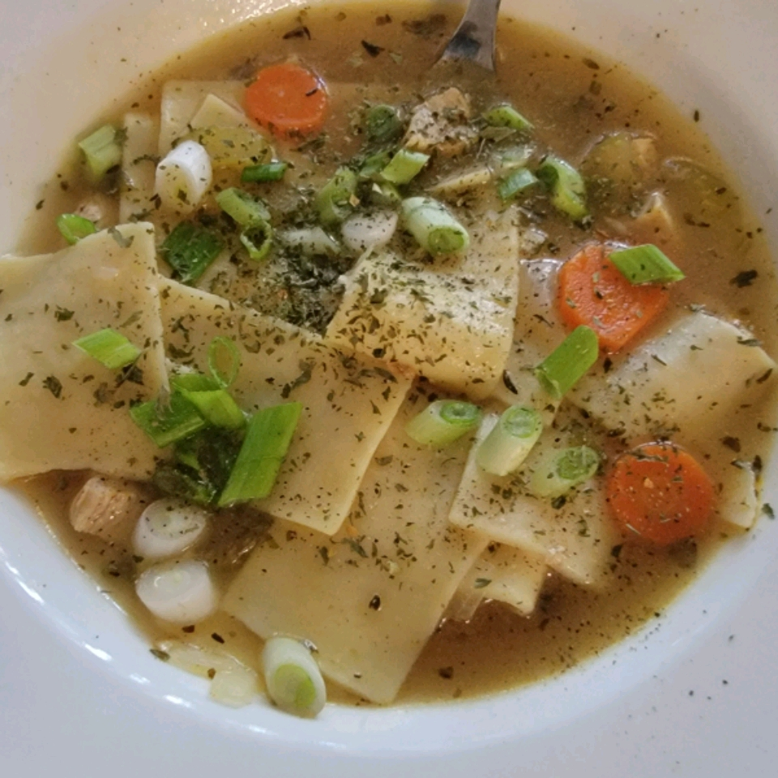

Chef John's Homemade Chicken Noodle Soup

How To Make This Lovely Soup
The prep time takes about 20 minutes and about the same to cook. For a total of 40 minutes, you can feed a family of 8!
Ingredients
- 1 tablespoon butter
- ½ cup diced carrot
- ½ cup diced onion
- ½ cup diced celery
- 1 pinch salt
- ¼ teaspoon fresh thyme leaves
- 2 tablespoons melted chicken fat
- 2 quarts roasted chicken broth
- 4 ounces uncooked wide egg noodles
- 2 cooked boneless chicken breast halves, cubed
- 1 pinch cayenne pepper (Optional)
- 1 pinch salt and ground black pepper to taste
- Melt butter in a large soup pot over medium heat. Stir in carrot, onion, celery, salt, and fresh thyme. Stir in chicken fat; cook and stir until the onions turn soft and translucent, 5 to 6 minutes.
- Stir in roasted chicken broth and bring to a boil.
- Season to taste with salt, if necessary; stir in egg noodles and cook until tender, about 5 minutes.
- Stir in cooked chicken breast meat and simmer until heated through, about 5 minutes. Season with cayenne pepper, salt and black pepper to taste.
Editor's Note:
This recipe calls for Chef John's Roasted Chicken Broth.
Nutrition Facts
Per Serving: 149 calories; protein 9.5g; carbohydrates 11.8g; fat 6.7g; cholesterol 40mg; sodium 1000.1mg.
Click Me To Go Back To The Recipe List